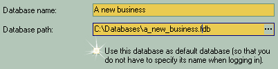

|
At welcome screen just click "Next" button to bring up the window for Name and Path settings:

| 1. | Under "Database name" enter the name of a new database. Here you need to enter a database name that will properly describe the nature of the new database. This name will then be shown in list with other databases, so it is a good idea to make it distinct |
| 2. | Enter the path to your database or click on browse button: to select it from the list of folders.. |
| 3. | Check the box to make this database default (e.g. most frequently used database). |
Click on "Save" button to create a new database and then proceed to the final screen.
|